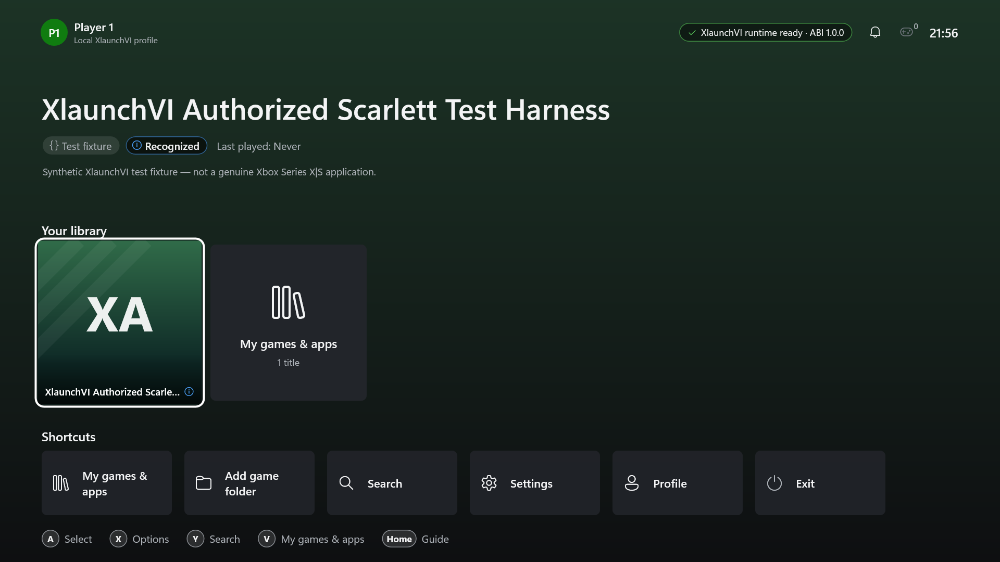
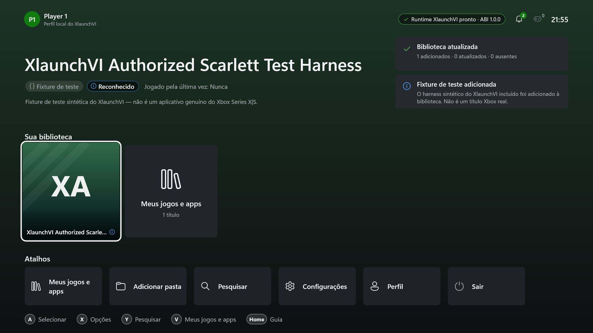
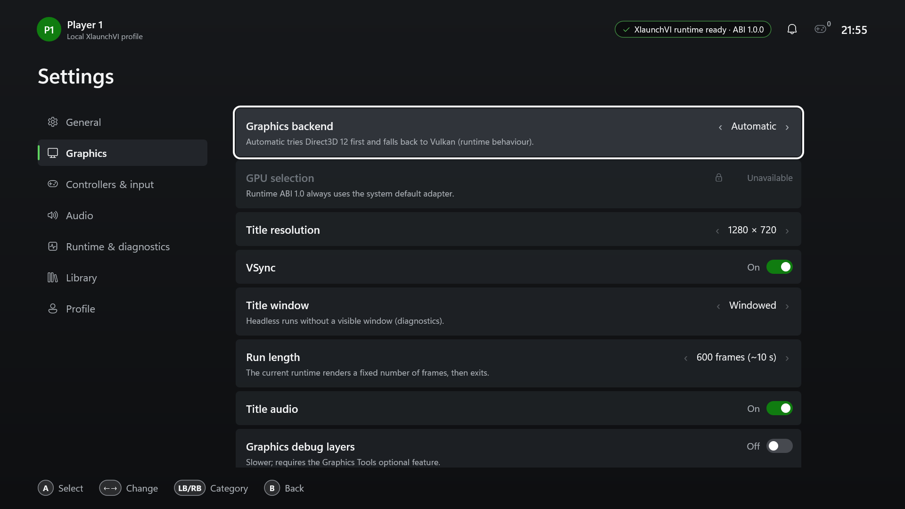

O futuro da recompilação do GTA VI começa no Brasil.
Mais do que só pelo GTA VI — é para mostrar que o Brasil também tem gente foda desenvolvendo engenharia reversa e recompilação de alto nível.
 Captura do launcher
Captura do launcher
Launcher em desenvolvimento.



Quem está construindo.
Do protótipo ao play.
- 01Jogo abre
Inicialização e reconhecimento do ambiente já relatados pela equipe.
- 02Menus a 30 FPS
Menus rodando de forma cravada, ainda sem texturas completas.
- 03Memória e shaders
Foco atual: otimizar memória e o pipeline de shaders sem textura.
- 04Texturas e quase jogável
Etapa necessária antes de uma eventual release pública.
Ajude o XLaunchVI a ir mais longe.
O apoio é voluntário e ajuda a equipe a investir em hardware, testes e infraestrutura. Não há promessa de venda, jogo completo ou release pública garantida.
Transparência: contribuições voluntárias destinam-se ao desenvolvimento nacional, equipamentos e infraestrutura da equipe; não há meta ou prestação financeira publicada por este site.
50450a25-89df-446c-92cc-e56f64a5ab7a
 Para pagar, abra o app do seu banco, escolha Pix Copia e Cola e use a chave acima. Substitua o placeholder do QR pela imagem gerada no app da equipe; o gráfico atual não é escaneável.
Para pagar, abra o app do seu banco, escolha Pix Copia e Cola e use a chave acima. Substitua o placeholder do QR pela imagem gerada no app da equipe; o gráfico atual não é escaneável.